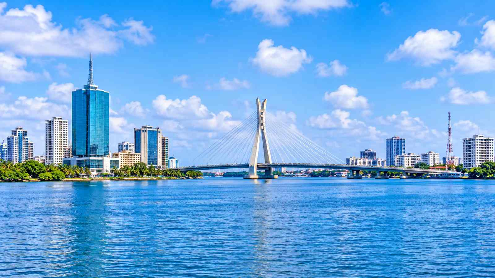

Lagos, Nigeria

Data
- Area:
- 3,577 km²
- Population:
- 22 million+
- Capital:
- Ikeja
- Languages:
- Yoruba, English, Pidgin
- Currency:
- Nigerian Naira (NGN)
- Time Zone:
- WAT (UTC+1)
- Calling Code:
- +234
- Internet TLD:
- .ng
Weather
- Temperature:
- 29 °C
- Conditions:
- Partly Cloudy
- Wind:
- 14 km/h
- Wind Chill:
- N/A
About Lagos
Lagos is a major commercial and cultural centre in southwestern Nigeria. Known for its energetic communities, coastal setting, busy markets and growing skyline, the city brings together people and traditions from across the country.
From the waterfront and historic districts to its music, food and creative industries, Lagos offers a lively introduction to modern urban life in Nigeria.